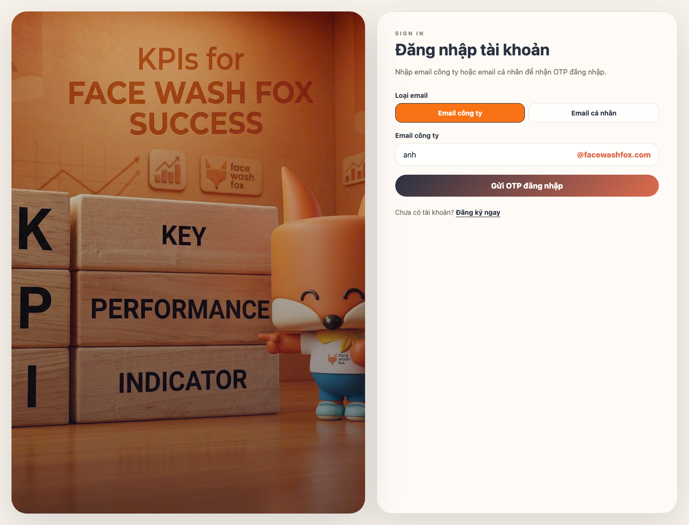
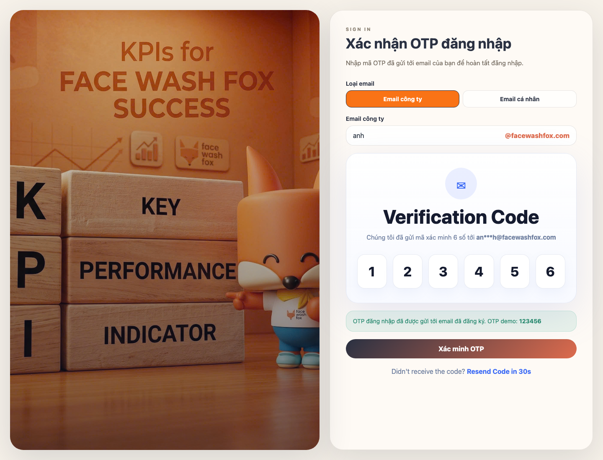
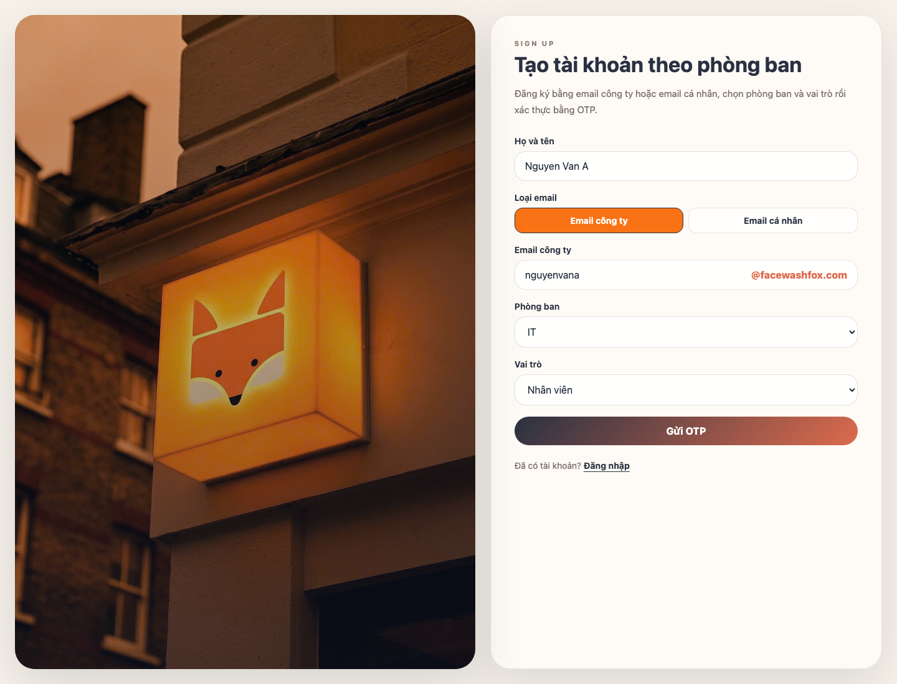
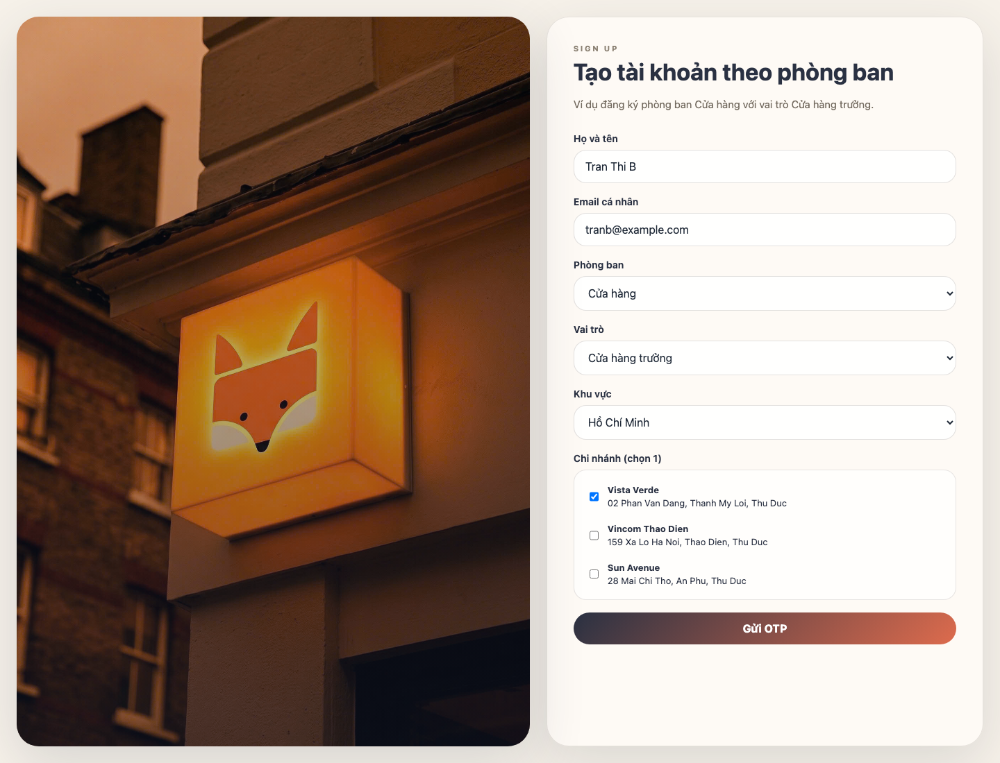
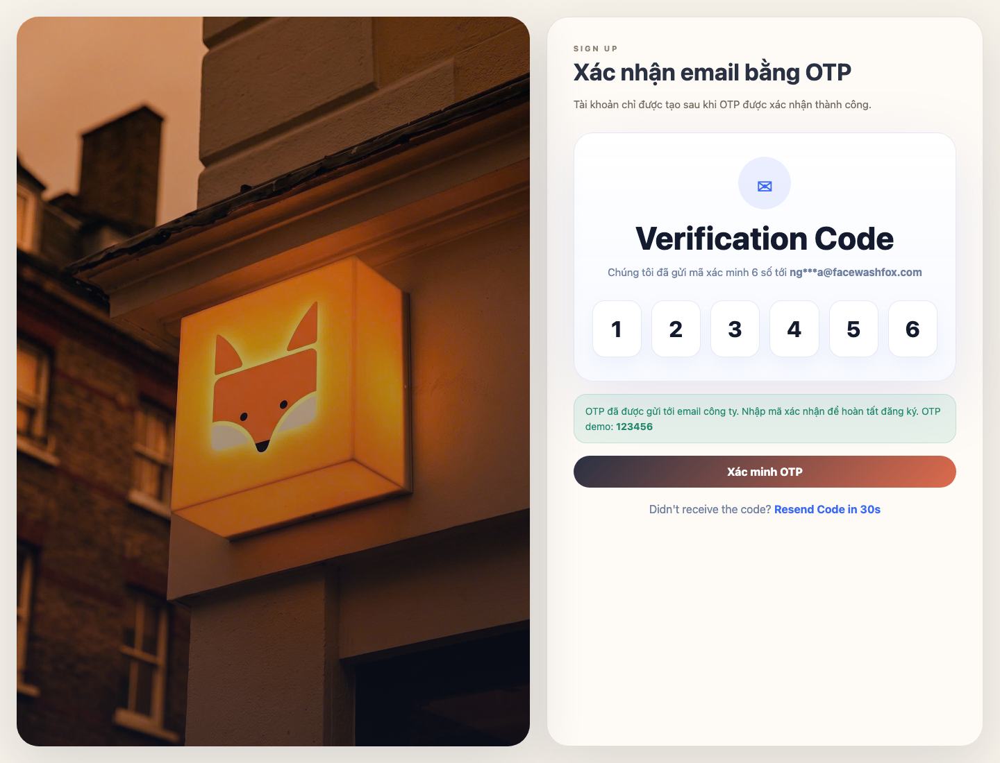
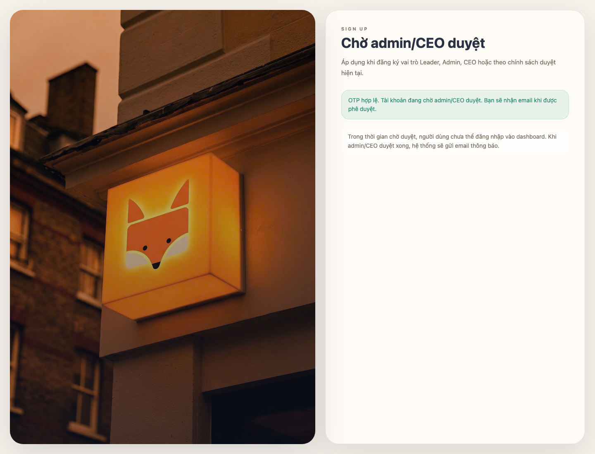

Tài liệu thao tác chi tiết kèm màn hình ví dụ cho người dùng.
Tài liệu này mô tả luồng đăng ký và đăng nhập hiện tại của project FWF KPI. Hệ thống không dùng mật khẩu ở màn hình đăng nhập/đăng ký mới; người dùng xác thực bằng mã OTP 6 số gửi qua email.
/login để đăng nhập hoặc /register để đăng ký.ten@facewashfox.com hoặc Email cá nhân.OTP_DEBUG=true; frontend muốn hiện OTP demo cần bật NEXT_PUBLIC_OTP_DEBUG=true.Vào /login. Chọn loại email rồi nhập email đã có tài khoản trong hệ thống.

Màn hình đăng nhập bằng email.
Với Email công ty, người dùng chỉ cần nhập phần trước @facewashfox.com; hệ thống tự gắn domain công ty. Với Email cá nhân, nhập đầy đủ địa chỉ email.
Nhấn Gửi OTP đăng nhập. Hệ thống chỉ gửi OTP nếu:
Các lỗi thường gặp:
Không tìm thấy tài khoản phù hợp.: email chưa có tài khoản.Tài khoản chưa xác minh email bằng OTP.: tài khoản chưa hoàn tất xác minh.Tài khoản đã xác thực OTP và đang chờ admin gốc duyệt.: tài khoản cần đợi phê duyệt.Chưa cấu hình SMTP để gửi OTP thật.: môi trường chưa có SMTP và không bật debug OTP.Nhập đủ 6 số OTP đã nhận qua email, sau đó nhấn Xác minh OTP.

Màn hình nhập OTP đăng nhập.
Nếu OTP đúng và còn hạn, hệ thống tạo session rồi chuyển người dùng vào /dashboard. Nếu OTP sai hoặc hết hạn, màn hình sẽ báo lỗi và người dùng cần nhập lại hoặc gửi lại OTP.
Vào /register. Nhập họ tên, chọn loại email, nhập email, chọn phòng ban và vai trò.

Màn hình đăng ký tài khoản theo phòng ban.
Quy tắc chọn vai trò:
Nếu chọn phòng ban Cửa hàng, form sẽ hiện thêm trường theo vai trò.

Ví dụ đăng ký tài khoản thuộc phòng ban Cửa hàng.
Quy tắc hiện tại:
Nhấn Gửi OTP. Hệ thống kiểm tra:
Nếu hợp lệ, hệ thống tạo OTP 6 số và gửi tới email.
Nhập OTP rồi nhấn Xác minh OTP.

Màn hình nhập OTP đăng ký.
Nếu vai trò không cần duyệt, hệ thống tạo tài khoản, tạo/cập nhật hồ sơ nhân sự tương ứng và đăng nhập người dùng vào dashboard.
Nếu OTP sai hoặc hết hạn, hệ thống hiển thị lỗi:
OTP không chính xác.OTP đã hết hạn. Vui lòng gửi lại OTP.Không tìm thấy yêu cầu xác minh phù hợp.Theo logic server hiện tại, các vai trò sau cần duyệt sau khi xác minh OTP:
Sau khi OTP hợp lệ, tài khoản chưa đăng nhập ngay mà chuyển sang trạng thái chờ duyệt.

Thông báo tài khoản đang chờ admin/CEO duyệt.
Người dùng cần chờ admin/CEO duyệt. Sau khi được duyệt, hệ thống gửi email thông báo và người dùng có thể quay lại /login để đăng nhập bằng OTP.
POST /api/auth/loginPOST /api/auth/login/verify-otpPOST /api/auth/register/request-otpPOST /api/auth/register/verify-otpcomponents/auth-shell.tsxcomponents/auth-provider.tsxlib/server/data.tslib/server/mailer.ts/register./login.